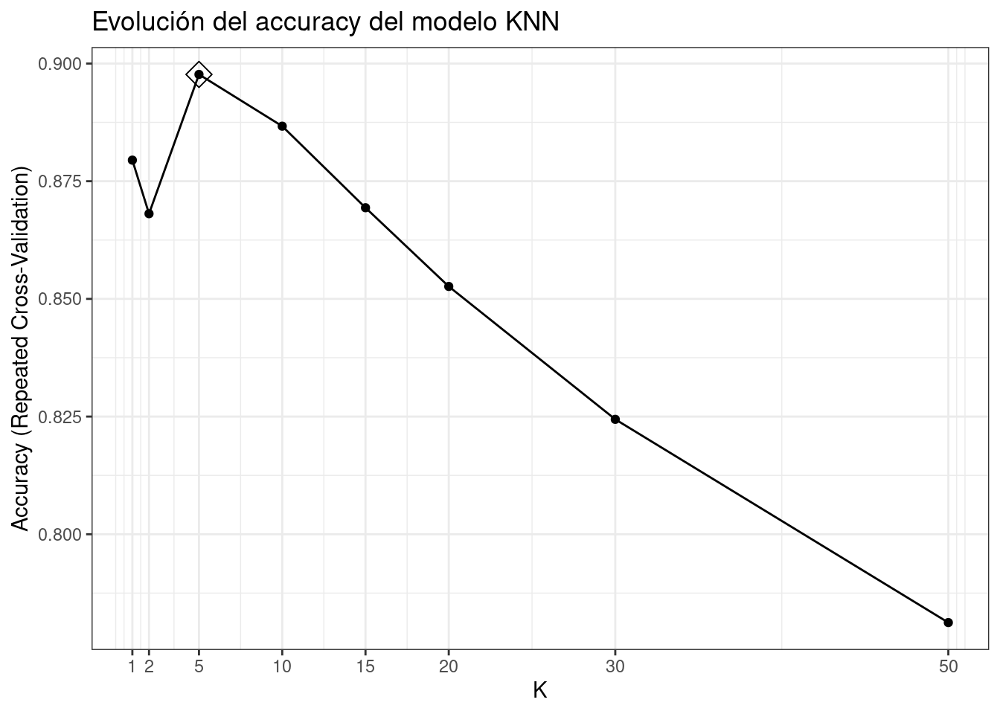
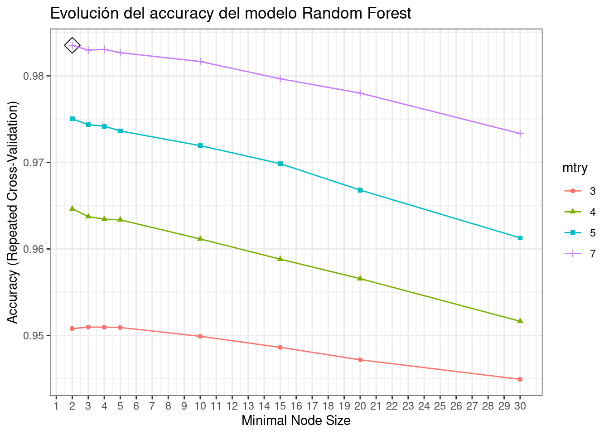
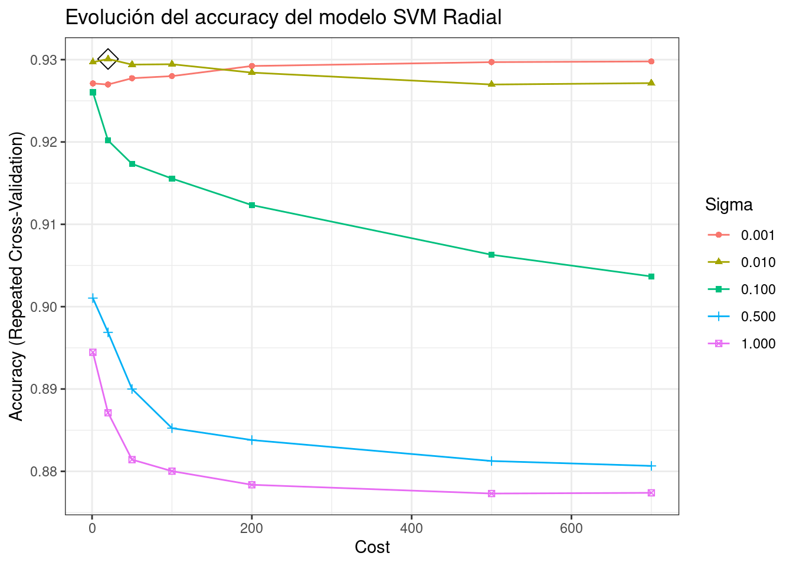

4 Ajuste de los hiperparámetros del modelo
Muchos modelos, entre ellos los árboles de regresión, contienen parámetros que no pueden aprenderse a partir de los datos de entrenamiento y, por lo tanto, deben de ser establecidos por el analista. A estos se les conoce como hiperparámetros. Los resultados de un modelo pueden depender en gran medida del valor que tomen sus hiperparámetros, sin embargo, no se puede conocer de antemano cuál es el adecuado. Aunque con la práctica, los especialistas en machine learning ganan intuición sobre qué valores pueden funcionar mejor en cada problema, no hay reglas fijas. La forma más común de encontrar los valores óptimos es probando diferentes posibilidades.
Escoger un conjunto de valores para el o los hiperparámetros.
Para cada valor (combinación de valores si hay más de un hiperparámetro), entrenar el modelo y estimar su error mediante un método de validación
Finalmente, ajustar de nuevo el modelo, esta vez con todos los datos de entrenamiento y con los mejores hiperparámetros encontrados.
4.1 Regresión logística
El método glm de caret emplea la función glm() del paquete básico de R. Este algoritmo no tiene ningún hiperparámetro pero, para que efectúe una regresión logística, hay que indicar family = “binomial”.
registerDoMC(cores = 4)Se configuran el número de repeticiones y las particiones para cada repetición:
particiones <- 10
repeticiones <- 5Ahora, se ajustan los hiperparámetros:
hiperparametros <- data.frame(parameter = "none")
set.seed(123)
seeds <- vector(mode = "list", length = (particiones * repeticiones) + 1)
for (i in 1:(particiones * repeticiones)) {
seeds[[i]] <- sample.int(1000, nrow(hiperparametros))}
seeds[[(particiones * repeticiones) + 1]] <- sample.int(1000, 1)Y por último, se define el entrenamiento y se ajusta el modelo:
# DEFINICIÓN DEL ENTRENAMIENTO
control_train <- trainControl(method = "repeatedcv", number = particiones,
repeats = repeticiones, seeds = seeds,
returnResamp = "final", verboseIter = FALSE,
allowParallel = TRUE)# AJUSTE DEL MODELO
set.seed(34220)
modelo_logistic <- train(Gama ~ ., data = data[,c(2:10,13,14,15)],
method = "glm",
tuneGrid = hiperparametros,
metric = "Accuracy",
trControl = control_train,
family = "binomial")
modelo_logistic## Generalized Linear Model
##
## 4711 samples
## 11 predictor
## 2 classes: 'Alta', 'Baja-media'
##
## No pre-processing
## Resampling: Cross-Validated (10 fold, repeated 5 times)
## Summary of sample sizes: 4240, 4239, 4240, 4240, 4239, 4241, ...
## Resampling results:
##
## Accuracy Kappa
## 0.9266427 0.8214096Empleando un modelo de regresión logística se consigue un accuracy promedio de validación del 93%.
4.2 k-NN
Ahora aplicamos la busqueda bayesiana para encontrar el mejor número de vecinos para el k-NN.
# Hiperparámetros
hiperparametros <- data.frame(k = c(1, 2, 5, 10, 15, 20, 30, 50))
set.seed(123)
seeds <- vector(mode = "list", length = (particiones * repeticiones) + 1)
for (i in 1:(particiones * repeticiones)) {
seeds[[i]] <- sample.int(1000, nrow(hiperparametros))
}
seeds[[(particiones * repeticiones) + 1]] <- sample.int(1000, 1)# DEFINICIÓN DEL ENTRENAMIENTO
control_train <- trainControl(method = "repeatedcv", number = particiones,
repeats = repeticiones, seeds = seeds,
returnResamp = "final", verboseIter = FALSE,
allowParallel = TRUE)# AJUSTE DEL MODELO
set.seed(34220)
modelo_knn <- train(Gama~ ., data = data[,c(2:10,13,14,15)],
method = "knn",
tuneGrid = hiperparametros,
metric = "Accuracy",
trControl = control_train)
modelo_knn## k-Nearest Neighbors
##
## 4711 samples
## 11 predictor
## 2 classes: 'Alta', 'Baja-media'
##
## No pre-processing
## Resampling: Cross-Validated (10 fold, repeated 5 times)
## Summary of sample sizes: 4240, 4239, 4240, 4240, 4239, 4241, ...
## Resampling results across tuning parameters:
##
## k Accuracy Kappa
## 1 0.8794749 0.7056852
## 2 0.8680960 0.6771780
## 5 0.8976852 0.7480572
## 10 0.8866888 0.7157664
## 15 0.8693664 0.6631850
## 20 0.8526423 0.6066279
## 30 0.8244122 0.5050079
## 50 0.7812349 0.3321058
##
## Accuracy was used to select the optimal model using the largest value.
## The final value used for the model was k = 5.# REPRESENTACIÓN GRÁFICA
ggplot(modelo_knn, highlight = TRUE) +
scale_x_continuous(breaks = hiperparametros$k) +
labs(title = "Evolución del accuracy del modelo KNN", x = "K") +
theme_bw()
Con un modelo k-NN con 5 vecinos se consigue un accuracy de validación promedio del 89’7%.
4.3 Árboles de decisión
Ahora, vamos a realizar el ajuste de hiperparámetros del árbol de decisión, que ya obtenía muy buenas predicciones.
# Hiperparámetros
hiperparametros <- data.frame(parameter = "none")
set.seed(123)
seeds <- vector(mode = "list", length = (particiones * repeticiones) + 1)
for (i in 1:(particiones * repeticiones)) {
seeds[[i]] <- sample.int(1000, nrow(hiperparametros))
}
seeds[[(particiones * repeticiones) + 1]] <- sample.int(1000, 1)# DEFINICIÓN DEL ENTRENAMIENTO
control_train <- trainControl(method = "repeatedcv", number = particiones,
repeats = repeticiones, seeds = seeds,
returnResamp = "final", verboseIter = FALSE,
allowParallel = TRUE)# AJUSTE DEL MODELO
set.seed(34220)
modelo_C50Tree <- train(Gama~ ., data = data[,c(2:10,13,14,15)],
method = "C5.0Tree",
tuneGrid = hiperparametros,
metric = "Accuracy",
trControl = control_train)
modelo_C50Tree## Single C5.0 Tree
##
## 4711 samples
## 11 predictor
## 2 classes: 'Alta', 'Baja-media'
##
## No pre-processing
## Resampling: Cross-Validated (10 fold, repeated 5 times)
## Summary of sample sizes: 4240, 4239, 4240, 4240, 4239, 4241, ...
## Resampling results:
##
## Accuracy Kappa
## 0.981405 0.9544161summary(modelo_C50Tree$finalModel)##
## Call:
## C50:::C5.0.default(x = x, y = y, weights = wts)
##
##
## C5.0 [Release 2.07 GPL Edition] Mon Apr 18 13:54:20 2022
## -------------------------------
##
## Class specified by attribute `outcome'
##
## Read 4711 cases (31 attributes) from undefined.data
##
## Decision tree:
##
## Engine <= 1599:
## :...Seats5 <= 0:
## : :...Power <= 99:
## : : :...Seats6 <= 0: Baja-media (128/1)
## : : : Seats6 > 0: Alta (7)
## : : Power > 99:
## : : :...Fuel_TypeDiesel <= 0:
## : : :...Engine <= 1499: Baja-media (13)
## : : : Engine > 1499: Alta (3)
## : : Fuel_TypeDiesel > 0:
## : : :...Seats8 <= 0: Alta (15)
## : : Seats8 > 0: Baja-media (2)
## : Seats5 > 0:
## : :...Engine <= 1343:
## : :...kmpl > 18.33: Baja-media (1346/1)
## : : kmpl <= 18.33:
## : : :...kmpl <= 17.6: Baja-media (344)
## : : kmpl > 17.6:
## : : :...Power <= 77: Baja-media (60)
## : : Power > 77:
## : : :...Power <= 82: Alta (8)
## : : Power > 82: Baja-media (50)
## : Engine > 1343:
## : :...Engine <= 1364: Alta (30)
## : Engine > 1364:
## : :...Engine > 1496: Baja-media (745/4)
## : Engine <= 1496:
## : :...Engine > 1493:
## : :...Engine <= 1495: Baja-media (13)
## : : Engine > 1495: Alta (18)
## : Engine <= 1493:
## : :...Fuel_TypeDiesel <= 0: Baja-media (77/5)
## : Fuel_TypeDiesel > 0:
## : :...Power > 66: Baja-media (276)
## : Power <= 66:
## : :...Power <= 64: Baja-media (24)
## : Power > 64: Alta (4)
## Engine > 1599:
## :...Power > 163.7:
## :...Fuel_TypeDiesel <= 0:
## : :...Power > 180: Alta (96/9)
## : : Power <= 180:
## : : :...Power <= 177.01: Alta (7)
## : : Power > 177.01:
## : : :...Engine <= 1797: Alta (5)
## : : Engine > 1797: Baja-media (26/1)
## : Fuel_TypeDiesel > 0:
## : :...kmpl <= 10.93:
## : :...kmpl <= 10.6: Alta (25)
## : : kmpl > 10.6: Baja-media (10)
## : kmpl > 10.93:
## : :...Engine > 2200: Alta (301)
## : Engine <= 2200:
## : :...Engine > 2149:
## : :...Engine <= 2179: Alta (26)
## : : Engine > 2179: Baja-media (14)
## : Engine <= 2149:
## : :...Power > 167.7: Alta (326/3)
## : Power <= 167.7:
## : :...Power <= 167.62: Alta (20)
## : Power > 167.62: Baja-media (4)
## Power <= 163.7:
## :...Seats8 > 0: Alta (95)
## Seats8 <= 0:
## :...Power > 147.8:
## :...kmpl > 18.7: Alta (7)
## : kmpl <= 18.7:
## : :...kmpl > 12.9:
## : :...Fuel_TypeDiesel <= 0: Baja-media (29)
## : : Fuel_TypeDiesel > 0:
## : : :...Engine <= 1984: Alta (3)
## : : Engine > 1984: Baja-media (26/2)
## : kmpl <= 12.9:
## : :...Engine <= 2092:
## : :...TransmissionManual <= 0: Alta (15/3)
## : : TransmissionManual > 0: Baja-media (2)
## : Engine > 2092:
## : :...Engine <= 2400: Baja-media (17)
## : Engine > 2400:
## : :...Engine <= 2773: Alta (6/1)
## : Engine > 2773: Baja-media (6)
## Power <= 147.8:
## :...Engine <= 1997:
## :...Engine <= 1798: Alta (45/1)
## : Engine > 1798:
## : :...Power <= 139.01:
## : :...Seats5 > 0: Baja-media (81/1)
## : : Seats5 <= 0:
## : : :...Year <= 2014: Baja-media (3)
## : : Year > 2014: Alta (3)
## : Power > 139.01:
## : :...kmpl <= 14.8: Baja-media (10)
## : kmpl > 14.8:
## : :...kmpl <= 16.8: Alta (32)
## : kmpl > 16.8:
## : :...Power <= 142: Baja-media (13)
## : Power > 142: Alta (6)
## Engine > 1997:
## :...Year <= 2011:
## :...Power <= 120.7: Alta (31/1)
## : Power > 120.7:
## : :...kmpl <= 14.49: Baja-media (23/1)
## : kmpl > 14.49: Alta (4)
## Year > 2011:
## :...Power > 138.1: Alta (106)
## Power <= 138.1:
## :...Power > 136: Baja-media (9)
## Power <= 136:
## :...Power > 88.73: Alta (103/1)
## Power <= 88.73:
## :...Power <= 70.02: Alta (9)
## Power > 70.02: Baja-media (4)
##
##
## Evaluation on training data (4711 cases):
##
## Decision Tree
## ----------------
## Size Errors
##
## 57 35( 0.7%) <<
##
##
## (a) (b) <-classified as
## ---- ----
## 1337 16 (a): class Alta
## 19 3339 (b): class Baja-media
##
##
## Attribute usage:
##
## 100.00% Engine
## 68.99% Seats5
## 58.01% kmpl
## 45.38% Power
## 28.27% Fuel_TypeDiesel
## 14.96% Seats8
## 6.26% Year
## 2.87% Seats6
## 0.36% TransmissionManual
##
##
## Time: 0.0 secsEmpleando como modelo un árbol simple C5.0, se consigue un accuracy promedio de validación del 98’1%.
4.4 Random Forest
El método ranger de caret emplea la función ranger() del paquete ranger. Este algoritmo tiene 3 hiperparámetros:
mtry: número predictores seleccionados aleatoriamente en cada árbol.
min.node.size: tamaño mínimo que tiene que tener un nodo para poder ser dividido.
splitrule: criterio de división.
Aunque caret también incluye el método rf con la función rf() del paquete randomForest, este último solo permite optimizar el hiperparámetro mtry.
# Hiperparámetros
hiperparametros <- expand.grid(mtry = c(3, 4, 5, 7),
min.node.size = c(2, 3, 4, 5, 10, 15, 20, 30),
splitrule = "gini")
set.seed(123)
seeds <- vector(mode = "list", length = (particiones * repeticiones) + 1)
for (i in 1:(particiones * repeticiones)) {
seeds[[i]] <- sample.int(1000, nrow(hiperparametros))
}
seeds[[(particiones * repeticiones) + 1]] <- sample.int(1000, 1)# DEFINICIÓN DEL ENTRENAMIENTO
control_train <- trainControl(method = "repeatedcv", number = particiones,
repeats = repeticiones, seeds = seeds,
returnResamp = "final", verboseIter = FALSE,
allowParallel = TRUE)# AJUSTE DEL MODELO
set.seed(34220)
modelo_rf <- train(Gama ~ ., data = data[,c(2:10,13,14,15)],
method = "ranger",
tuneGrid = hiperparametros,
metric = "Accuracy",
trControl = control_train,
# Número de árboles ajustados
num.trees = 500)
modelo_rf## Random Forest
##
## 4711 samples
## 11 predictor
## 2 classes: 'Alta', 'Baja-media'
##
## No pre-processing
## Resampling: Cross-Validated (10 fold, repeated 5 times)
## Summary of sample sizes: 4240, 4239, 4240, 4240, 4239, 4241, ...
## Resampling results across tuning parameters:
##
## mtry min.node.size Accuracy Kappa
## 3 2 0.9507990 0.8806760
## 3 3 0.9509681 0.8810356
## 3 4 0.9509680 0.8810744
## 3 5 0.9509255 0.8810132
## 3 10 0.9499067 0.8785655
## 3 15 0.9486324 0.8754411
## 3 20 0.9471894 0.8719629
## 3 30 0.9449389 0.8663402
## 4 2 0.9646382 0.9138751
## 4 3 0.9637462 0.9117117
## 4 4 0.9634485 0.9109872
## 4 5 0.9633642 0.9108188
## 4 10 0.9611564 0.9054930
## 4 15 0.9588218 0.8998535
## 4 20 0.9565711 0.8945093
## 4 30 0.9516469 0.8825840
## 5 2 0.9750379 0.9390685
## 5 3 0.9743592 0.9374681
## 5 4 0.9741901 0.9370737
## 5 5 0.9736372 0.9357505
## 5 10 0.9719390 0.9316412
## 5 15 0.9698595 0.9266553
## 5 20 0.9668035 0.9192999
## 5 30 0.9612837 0.9060455
## 7 2 0.9835284 0.9597806
## 7 3 0.9829770 0.9584159
## 7 4 0.9830614 0.9586304
## 7 5 0.9826792 0.9577242
## 7 10 0.9816599 0.9552617
## 7 15 0.9796647 0.9504233
## 7 20 0.9780094 0.9464033
## 7 30 0.9733400 0.9349875
##
## Tuning parameter 'splitrule' was held constant at a value of gini
## Accuracy was used to select the optimal model using the largest value.
## The final values used for the model were mtry = 7, splitrule = gini
## and min.node.size = 2.modelo_rf$finalModel## Ranger result
##
## Call:
## ranger::ranger(dependent.variable.name = ".outcome", data = x, mtry = min(param$mtry, ncol(x)), min.node.size = param$min.node.size, splitrule = as.character(param$splitrule), write.forest = TRUE, probability = classProbs, ...)
##
## Type: Classification
## Number of trees: 500
## Sample size: 4711
## Number of independent variables: 30
## Mtry: 7
## Target node size: 2
## Variable importance mode: none
## Splitrule: gini
## OOB prediction error: 1.59 %# REPRESENTACIÓN GRÁFICA
ggplot(modelo_rf, highlight = TRUE) +
scale_x_continuous(breaks = 1:30) +
labs(title = "Evolución del accuracy del modelo Random Forest") +
guides(color = guide_legend(title = "mtry"),
shape = guide_legend(title = "mtry")) +
theme_bw()
Empleando un modelo random forest con mtry = 7, min.node.size = 2 y splitrule = “gini”, se consigue un accuracy promedio de validación del 98’4%.
4.5 SVM
El método svmRadial de caret emplea la función ksvm() del paquete kernlab. Este algoritmo tiene 2 hiperparámetros:
sigma: coeficiente del kernel radial.
C: penalización por violaciones del margen del hiperplano.
Se ajustan los hiperparámetros y se entrena el modelo con kernel radial:
# Hiperparámetros
hiperparametros <- expand.grid(sigma = c(0.001, 0.01, 0.1, 0.5, 1),
C = c(1 , 20, 50, 100, 200, 500, 700))
set.seed(123)
seeds <- vector(mode = "list", length = (particiones * repeticiones) + 1)
for (i in 1:(particiones * repeticiones)) {
seeds[[i]] <- sample.int(1000, nrow(hiperparametros))
}
seeds[[(particiones * repeticiones) + 1]] <- sample.int(1000, 1)# DEFINICIÓN DEL ENTRENAMIENTO
control_train <- trainControl(method = "repeatedcv", number = particiones,
repeats = repeticiones, seeds = seeds,
returnResamp = "final", verboseIter = FALSE,
allowParallel = TRUE)# AJUSTE DEL MODELO
set.seed(342)
modelo_svmrad <- train(Gama ~ ., data = data[,c(2:10,13,14,15)],
method = "svmRadial",
tuneGrid = hiperparametros,
metric = "Accuracy",
trControl = control_train)
modelo_svmrad## Support Vector Machines with Radial Basis Function Kernel
##
## 4711 samples
## 11 predictor
## 2 classes: 'Alta', 'Baja-media'
##
## No pre-processing
## Resampling: Cross-Validated (10 fold, repeated 5 times)
## Summary of sample sizes: 4240, 4240, 4239, 4240, 4240, 4240, ...
## Resampling results across tuning parameters:
##
## sigma C Accuracy Kappa
## 0.001 1 0.9271074 0.8244331
## 0.001 20 0.9269789 0.8236833
## 0.001 50 0.9277433 0.8254514
## 0.001 100 0.9279981 0.8257346
## 0.001 200 0.9292287 0.8283934
## 0.001 500 0.9296964 0.8290602
## 0.001 700 0.9297806 0.8289960
## 0.010 1 0.9296963 0.8298518
## 0.010 20 0.9300766 0.8287067
## 0.010 50 0.9293980 0.8270251
## 0.010 100 0.9294410 0.8270782
## 0.010 200 0.9284219 0.8245447
## 0.010 500 0.9269788 0.8206876
## 0.010 700 0.9271481 0.8208105
## 0.100 1 0.9260447 0.8192948
## 0.100 20 0.9201869 0.8035070
## 0.100 50 0.9173425 0.7958958
## 0.100 100 0.9155593 0.7916444
## 0.100 200 0.9123322 0.7840549
## 0.100 500 0.9063028 0.7695067
## 0.100 700 0.9036705 0.7629402
## 0.500 1 0.9010397 0.7500010
## 0.500 20 0.8968771 0.7400260
## 0.500 50 0.8900000 0.7235634
## 0.500 100 0.8852446 0.7115387
## 0.500 200 0.8838005 0.7079148
## 0.500 500 0.8812541 0.7010558
## 0.500 700 0.8806599 0.6992638
## 1.000 1 0.8944579 0.7267584
## 1.000 20 0.8871119 0.7111117
## 1.000 50 0.8814231 0.6968666
## 1.000 100 0.8800224 0.6931900
## 1.000 200 0.8783665 0.6888309
## 1.000 500 0.8773057 0.6860360
## 1.000 700 0.8773906 0.6861693
##
## Accuracy was used to select the optimal model using the largest value.
## The final values used for the model were sigma = 0.01 and C = 20.modelo_svmrad$finalModel## Support Vector Machine object of class "ksvm"
##
## SV type: C-svc (classification)
## parameter : cost C = 20
##
## Gaussian Radial Basis kernel function.
## Hyperparameter : sigma = 0.01
##
## Number of Support Vectors : 878
##
## Objective Function Value : -13539.15
## Training error : 0.057737# REPRESENTACIÓN GRÁFICA
ggplot(modelo_svmrad, highlight = TRUE) +
labs(title = "Evolución del accuracy del modelo SVM Radial") +
theme_bw()
Empleando un modelo SVM Radial con sigma = 0.01 y C = 20, se consigue un accuracy promedio de validación del 93%.